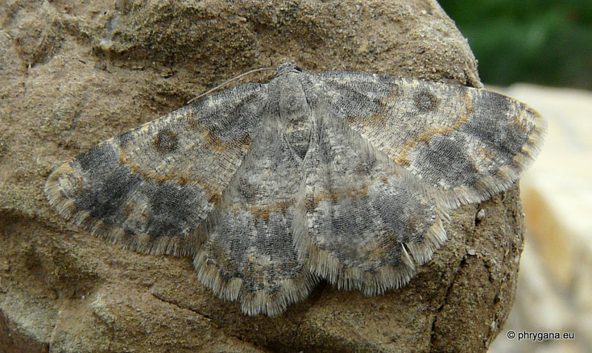
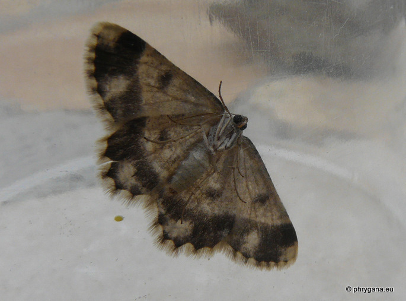
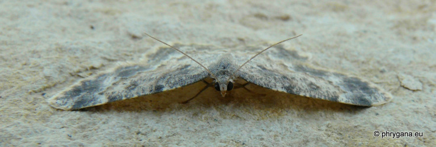
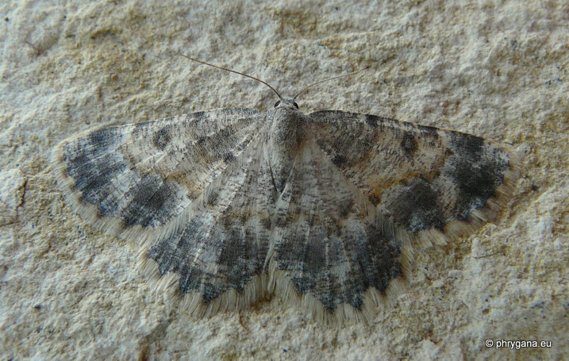

| PHRYGANA | Fauna | Flora |
additions nouveautés |
espèces species |
contact -
info - commentaires phrygana1 (at) gmail.com |
| diversité crétoise -- Cretan diversity | |||||
| Charissa (Euchrognophos) dubitaria (Staundinger 1892) |
| 241 | Fauna | GEOMETRIDAE | Ennominae | Charissa Curtis 1826 |
|
 Gnopharmia stevenaria Melambes (Agios Giorgos) 16 mars 2011 |
| Envergure: 38 - 42 mm. Couleur de fond gris foncé bleuté avec une large bande médiane plus claire, délimitée de chaque côté par des transversales ocres; un point assez large gris bleuté au milieu de la bande transversale près de la costa; frange à longs poils gris clair |
| Larve polyphage? |
| Espèce univoltine?: période de vol: février mars |
| Statut en Crète: indigène -- native |
| Biotopes en Crète: phrygana, olivaies, garrigue, maquis |
| Distribution: Grèce - Crète |
| Note: l'adulte vient à la lumière. |
|
 Gnopharmia stevenaria Melambes (Agios Giorgos) 16 mars 2011 |
|
 Gnopharmia stevenaria Melambes (Agios Giorgos) 20 mars 2011 |
|
 Gnopharmia stevenaria Melambes (Agios Giorgos) 20 mars 2011 |
| 23 mars 2011 |
| © paul fontaine -- © Phrygana.eu 2007 -- 2013 |